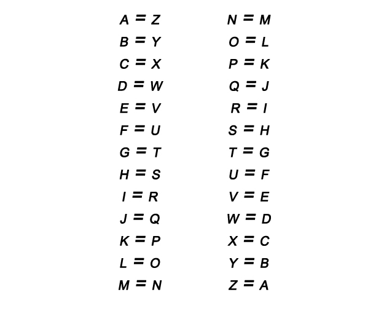

The Atbash cipher is a substitution cipher with a specific key where the letters of the alphabet are reversed. I.e. all 'A's are replaced with 'Z's, all 'B's are replaced with 'Y's, and so on. It was originally used for the Hebrew alphabet, but can be used for any alphabet.
The Atbash cipher offers almost no security, and can be broken very easily. Even if an adversary doesn't know a piece of ciphertext has been enciphered with the Atbash cipher, they can still break it by assuming it is a substitution cipher and determining the key using hill-climbing. If multiple collating orders are available, which one was used in encryption can be used as a key, but this does not provide significantly more security, considering only a few letters can give away which one was used. The Atbash cipher is also an Affine cipher with a=25 and b = 25, so breaking it as an affine cipher also works.
[Source:
Wikipedia]
